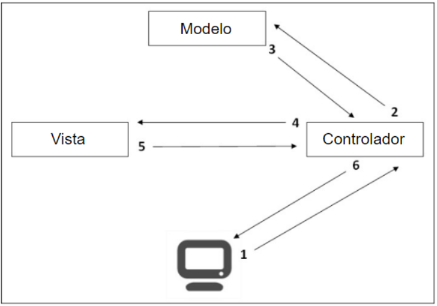
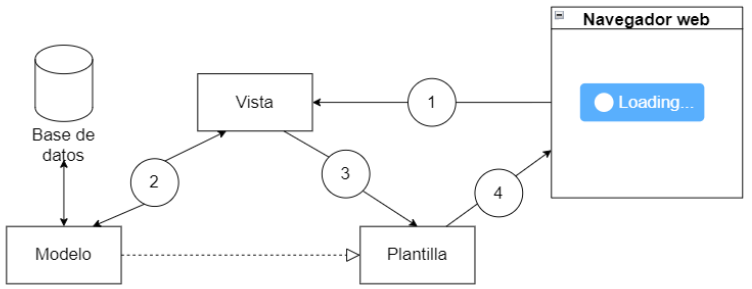

Framework Django
Historia de Django
Desarrolladores
Adrian Holovaty: Nacido en 1981, es un desarrollador web, periodista y empresario estadounidense de Chicago, Illinois , que vive en Ámsterdam, Países Bajos. Es co-creador del marco web Django y defensor del "periodismo a través de la programación informática", [1].
Simon Willison: Nacido en 1981, es un programador británico, cofundador del directorio de conferencias sociales Lanyrd y director de arquitectura de Eventbrite . Originario del Reino Unido, actualmente reside en San Francisco, California. Simon es co-creador del marco web Django y es un orador público frecuente.

Comienzo de Django
Django nació en el año 2003, cuando los programadores Web del diario Lawrence Journal-World, Adrian Holovaty y Simon Willison, comenzaron a usar Python para crear sus aplicaciones. Los periodistas (y los directivos) exigían que se agregaran nuevas características y que aplicaciones enteras se crearan a una velocidad vertiginosa, a menudo con sólo días u horas de preaviso. Es así que Adrian y Simon desarrollaron por necesidad un framework de desarrollo Web que les ahorrara tiempo, era la única forma en que podían crear aplicaciones mantenibles en tan poco tiempo, [2].
Originalmente se desarrolló para administrar varios sitios de noticias que se encontraban a cargo del periódico The World Company de Lawrence, Kansas. En julio de 2005 se lanzó públicamente bajo una licencia de software otorgada principalmente para los sistemas operativos BSD (Berkeley Software Distribution); el marco lleva el nombre del guitarrista de jazz gitano Django Reinhardt. En junio de 2008 se creó Django Software Foundation la cual se haría cargo de Django en el futuro, [3].
¿Qué es Django?
Es un framework web que usa Python para crear sitios web. Su objetivo es escribir sitios web dinámicos muy rápidos.
Traducción: Lema de Django
El framework web para perfeccionistas con plazos.
El eslogan de Django es explícito. Este marco fue creado para acelerar el desarrollo fase de un sitio, pero no exclusivamente.
Patrones de diseño
-
Modelo Vista Controlador. (MVC)
-
Plantilla de vista de modelo. (MTV)
El marco de Modelo Vista Controlador ( MVC)
Antes de que existiera el marco MVC, la programación web mezclaba el acceso a la base de datos código y el código principal de la página. Esto devolvió una página HTML al usuario. Incluso si estamos almacenando archivos CSS y JavaScript en archivos externos, los códigos de idioma del lado del servidor son almacenados en un archivo que se comparte entre al menos tres idiomas: Python, SQL y HTML.
El patrón MVC fue creado para separar la lógica de la representación y tener un arquitectura interna más tangible y real. El modelo-vista-controlador (MVC) representa las tres capas de aplicación que recomienda el paradigma:
-
Modelos: Representan la organización de los datos en una base de datos. En palabras simples, podemos decir que cada modelo define una tabla en la base de datos y las relaciones entre otros modelos.
-
Vistas: Contienen toda la información que se enviará al cliente. Crean vistas que generará el documento HTML final. Podemos asociar el código HTML con las vistas.
-
Controladores: Contienen todas las acciones realizadas por el servidor y no son visibles para el cliente. El controlador comprueba si el usuario está autenticado o puede generar el código HTML a partir de una plantilla, [4].
Relación de semejanza entre MVC con MVT
Si compara esto con el MVC clásico, "Modelo" es comparable al de Django Modelos, "Ver" suele ser Plantillas de Django, y "Controlador" es el marco mismo que procesa una solicitud HTTP entrante y la enruta a la función de Vista correcta.
Plantilla de vista de modelo (MTV)
Django llama a esto la arquitectura Model-Template-View (MTV). Hay separación de preocupaciones entre las clases de interfaz de base de datos (Modelo), procesamiento de solicitudes de clases (Vista), y un lenguaje de plantillas para la presentación final (Plantilla), [6]
En el marco MTV, el controlador es manejada por el marco mismo y la mayor parte de la emoción en Django sucede en modelos, plantillas y vistas, Django se conoce como un marco MTV.
En el patrón de desarrollo de MTV:
-
M significa "Modelo", la capa de acceso a datos. Esta capa contiene cualquier cosa y todo sobre los datos: cómo acceder a ellos, cómo validarlos, qué comportamientos tiene y las relaciones entre los datos.
-
T significa “Plantilla”, la capa de presentación. Esta capa contiene información relacionada con la presentación.
Decisiones: cómo se debe mostrar algo en una página web u otro tipo de documento.
-
V significa "Ver" o “Vista”, la capa de lógica empresarial. Esta capa contiene la lógica que accede el modelo y se remite a la(s) plantilla(s) apropiada(s). Puedes pensar en ello como el puente. entre modelos y plantillas, [5].
Tipos de instalación
-
Instalación local: Si instalas Django dentro del entorno por defecto/global sólo podrás apuntar a una sóla versión de Django en la computadora. Esto puede ser un problema si quieres crear nuevos sitios (usando la última versión de Django) pero manteniendo los sitios web que dependen de versiones más antiguas.
-
Instalación virtual: Se habilitan múltiples entornos Django diferentes en la misma computadora.
Bases de datos que soporta Django
-
PostgreSQL.
-
MySQL.
-
Oracle.
-
SQLite, [6].
Versiones de Django que se pueden usar con Python [7].
| Versión Django | Versiones de Python |
| 2.2 | 3.5, 3.6, 3.7, 3.8 (agregado en 2.2.8), 3.9 (agregado en 2.2.17) |
| 3.1 | 3.6, 3.7, 3.8, 3.9 (agregado en 3.1.3) |
| 3.2 | 3.6, 3.7, 3.8, 3.9, 3.10 (agregado en 3.2.9) |
| 4.0, 4.1 | 3.8, 3.9, 3.10 |
Bibliografía
[1] A. Holovaty, «hmong,» [En línea]. Available: https://hmong.es/wiki/Adrian_Holovaty.
[2] A. C. Cárdenas López, “ANÁLISIS DE PYTHON CON DJANGO FRENTE A RUBY ON RAILS PARA DESARROLLO ÁGIL DE APLICACIONES WEB. CASO PRÁCTICO: DECH.,” Экономика Региона, vol. 10, no. 9, p. 32, 2012, [Online]. Available: https://dspace.ups.edu.ec/bitstream/123456789/5224/1/UPS-QT03885.pdf
[3] J. Angelus, «Django (Web framework),» de Open source, Web application framework, Architectural pattern, 2011.
[4] S. Dauzon, A. Bendoraitis, and A. Ravindran, Django: Web Development with Python. 2016. [Online]. Available:
[5] A. Holovaty and J. Kaplan-moss, 02 DJ - [Expert_s Voice in Web Development] Adrian Holovaty - The Definitive Guide to Django - Web Development Done Right (2008, Apress) - libgen.lc.pdf.
[6] Mozilla, «Mozilla,» [En línea]. Available: (https://developer.mozilla.org/es/docs/Learn/Server-side/Django/development_environment).. [Último acceso: 16 08 2022].
[7] django, «django,» [En línea]. Available: https://docs.djangoproject.com/en/4.1/faq/install/. [Último acceso: 16 08 2022].